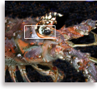
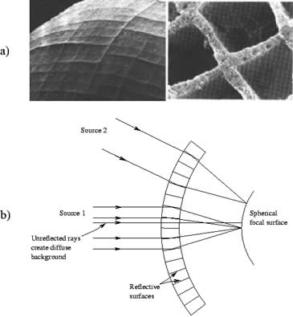
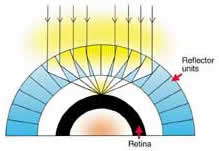

| Глаз
лангуста http://www.harunyahya.ru/images_what_is_this/whatisthis01.html |
|  | Все животные на Земле имеют самые разные глаза. Нам известен только "камерный" тип глаз, присущий позвоночным. Глаз такой конструкции работает по принципу преломления света. Луч света проникает снаружи, преломляясь в линзе (хрусталике) в передней части глаза, и благодаря этому фокусируется на задней стенке глаза. Однако глаза некоторых живых существ устроены совершенно по-другому. Например, глаза лангуста - морского рака работают не по принципу преломления света, а по принципу его отражения. Первая интересная особенность глаз лангуста заключается в том, что на их поверхности расположено большое число квадратиков. Эти квадратики, как показано на рисунке, расположены в строгом порядке. Американский биолог Хартлайн в одной из своих статей в журнале "Science" ("Наука") пишет следующее: |
| "Морской рак напоминает мне прямоугольник меньше, чем какое-либо другое живое существо, которых я видел до настоящего времени. Но глаз его под микроскопом походит на безукоризненный чертеж".1 Эти ровные квадратики, которыми покрыта поверхность глаза лангуста, на самом деле являются передними частями квадратных линз. Такого рода конструкцию можно сравнить с пчелиными сотами. Когда вы смотрите на соты, то вам кажется, что они состоят из одной шестиугольной поверхности. Однако шестиугольные поверхности являются всего лишь внешней частью шестиугольных призм, углубляющихся вовнутрь. Глаз лангуста отличается только тем, что представляет собой не шестиугольник, а квадрат. |
|  Поверхность глаза морского рака (лангуста) образована из ровных квадратиков. Каждый из этих аккуратных квадратов на самом деле является внешней поверхностью квадратной призмы. А внутренняя поверхность каждой квадратной призмы устроена по принципу зеркала. Зеркальные поверхности усиленно отражают свет. Свет очень аккуратно фокусируется на сетчатке, расположенной в задней части глаза. Призмы, расположенные в глазу, помещены под таким углом, что лучи света отражаются лишь в единственной точке. | Что еще интереснее, так это то, что каждая из внутренних поверхностей квадратных призм
устроена по принципу зеркала, и эти зеркала очень интенсивно отражают лучи света. Главная же
идея замысла заключается в том, чтобы аккуратно фокусировать луч света, отражающийся от зеркал
на сетчатке, которая находится в задней части глаза. Призмы внутри глаза расположены под таким
углом, что все они безошибочно отражают свет в одну-единственную точку. Конечно, очевидно, насколько удивительным является такое устройство. Внутренняя часть камер, которые представляют собой квадраты безупречной формы, покрыта тканью, обладающей свойствами зеркала. Кроме того, каждая из этих камер создана на основе очень точных геометрических расчетов, чтобы отражать все лучи света в одной точке. |
| Майкл Лэнд, работающий в Англии в Сассекском университете, - первый ученый, подробно
исследовавший конструкцию глаза лангуста. Лэнд отметил, что глаз этого животного представляет
собой воплощение удивительного замысла.2
Совершенно ясно, что с точки зрения теории эволюции подобное устройство глаза порождает немало вопросов. Прежде всего, глаз обладает свойством неразложимости систем. Если бы на передней части глаза не было квадратных камер, или же эти камеры не обладали способностью отражения света, или если бы не было сетчатки в задней части глаза, глаз никак не смог бы выполнять свою функцию. Поэтому нельзя говорить, что глаз лангуста развивался поэтапно. Абсолютно бессмысленно полагать, что такой великолепный замысел реализовался случайно. Ясно, что глаз лангуста, обладающий столь совершенной системой, был создан. |
|  | Существуют и другие особенности строения глаза лангуста, которые позволяют усомниться в постулатах теории эволюции. Когда мы попытаемся выяснить, у кого из живых существ так же точно устроены глаза, перед нами предстанет любопытная картина. Конструкция глаза, основанная на принципе отражения световых лучей, присуща только морским животным класса ракообразных типа членистоногих, куда входят различные раки и креветки. |
| У остальных особей класса ракообразных наблюдается тип глаз, устроенных по принципу преломления света, что полностью отличается от устройства глаза, отражающего свет. Внутри глаза такого типа находится множество маленьких ячеек. Однако это ячейки шестиугольной или округлой формы, и они совсем не такие, как квадратики в глазах рака. Еще важнее то, что внутри этих ячеек находятся линзы, которые не отражают, а преломляют свет. Линзы, преломив луч света, фокусируют его на сетчатке. Глаза у большей части особей класса ракообразных действуют именно на основе линзы, преломляющей свет. И только у двух особей этого класса глаза устроены как зеркала, отражающие свет: у рака и у креветки. Между тем, согласно предположениям сторонников теории эволюции, все живые организмы, включая ракообразных, должно быть, произошли от общего предка. Если мы согласимся с этим утверждением, то мы должны будем также согласиться с тем, что тип глаз, устроенный по принципу отражения света, произошел от типа глаз, действующих на основе линзы путем преломления света. Однако такая трансформация невозможна, поскольку обе конструкции глаза в рамках своей системы работают великолепно, и никакая "промежуточная ступень" не улучшит их работу. Постепенное исчезновение линзы в глазу ракообразного животного и образование на ее месте зеркальной поверхности будут причиной того, что животное утратит даже первоначальную способность видеть и вследствие этого исчезнет при естественном отборе. Совершенно ясно, что две различные конструкции глаз были созданы на основе двух различных планов. Глаза настолько правильны с точки зрения геометрии, что считать все это случайным образованием представляется полной бессмыслицей. Глаз лангуста, так же как и другие проявления чудесного творения, показывает нам, насколько совершенной и безграничной силой созидания обладает Творец. Это проявление бесконечного знания, мудрости и мощи Всевышнего Аллаха. К какому бы фрагменту животного мира мы ни обратились, мы то и дело сталкиваемся с подобными чудесами. 1. B.K. Hartline, "Lobster-Eye X-ray Telescope Envisioned," Science, Vol. 207, p. 47. 2. Michael F. Land, "Superposition Images Are Formed by Reflection in Eyes of Some Oceanic Decapod Crustacea", Nature, Vol. 263, p |